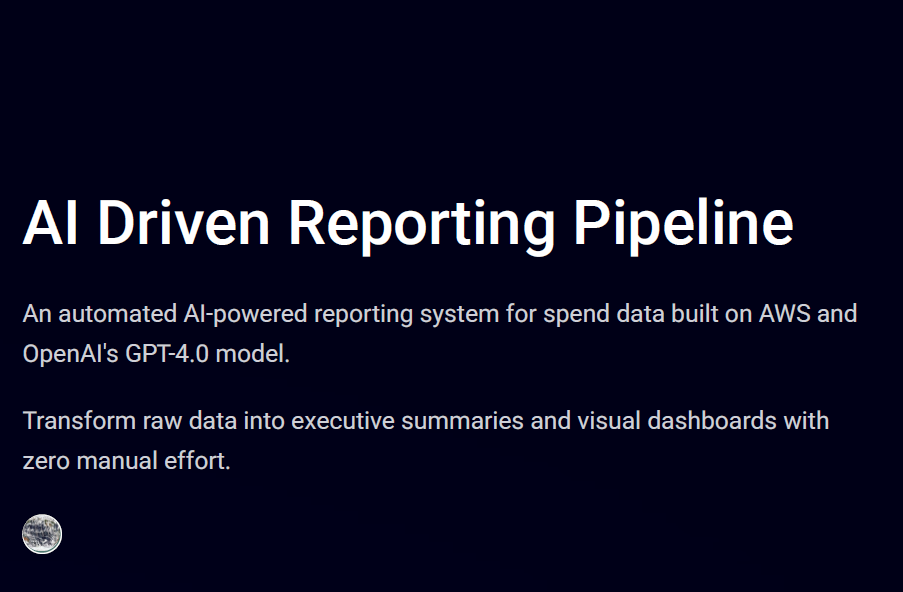

Machine Learning Forecasting System
XGBoost-powered serverless model with automated deployment and monthly spend forecasting.

AI-Driven Reporting Pipeline
Fully automated GPT-4 + AWS pipeline that creates natural language summaries and dashboards.
HR Data Risk Modeling
Polynomial regression + dashboard system for HR scenario forecasting with serverless automation.

Automation Workflow
Fully event-driven system with GitHub → Lambda → Streamlit pipeline for live dashboards.